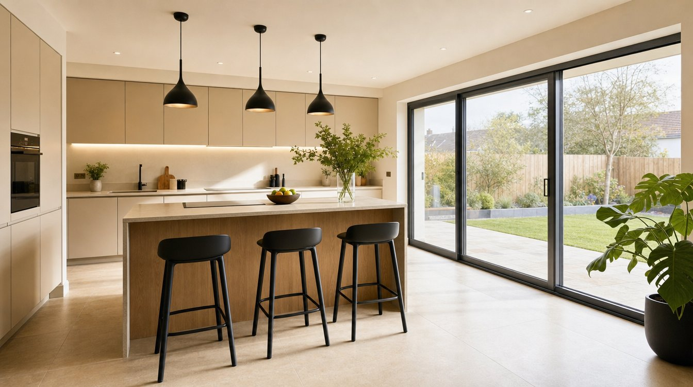
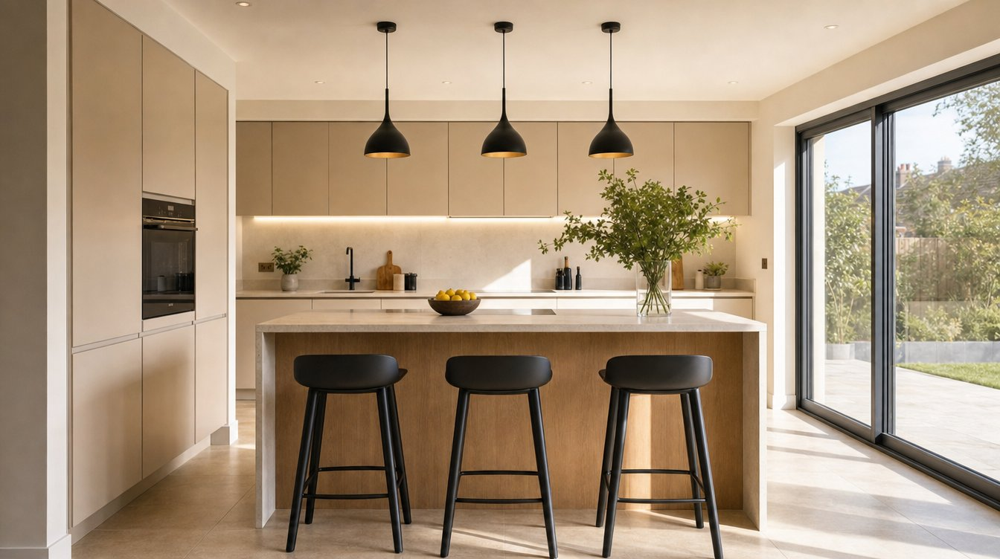
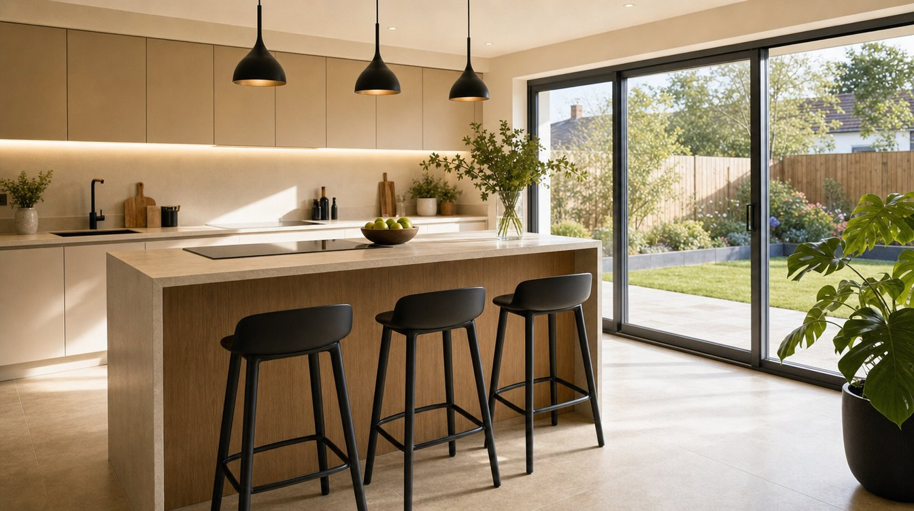

Before & After
From a dated conservatory to a bright, open extension.
Drag the handle to see a tired rear conservatory replaced with a modern open-plan extension. Illustrative of the type of work — not a specific project.
The Story
What a rear extension involves.
This is the kind of house an extension is made for — a well-built Cork family home that everyone has outgrown, with a kitchen closed off from the garden and nowhere for the family to sit together while the dinner is on. Often there’s a dated conservatory or lean-to at the back doing half a job.
A rear extension opens the back of the house right up. The old kitchen and the new floor area become one bright, open-plan kitchen, dining and living space, with wide sliding doors that bring the garden in and the light with it.
We handle it all with one in-house team — design and planning, foundations and structure, the build itself, then the kitchen, glazing and finishes — so there’s one plan and one point of contact from the first drawing to the final snag.
It’s the same approach behind every extension we take on across Cork.
Key Details
What’s typically involved.
- Service — Rear extension
- Location — Cork
- Single-storey extension to the rear
- Open-plan kitchen, dining and living
- Wide sliding glass doors to the garden
- Structural opening between old and new
- New kitchen and island
- Paving, landscaping and finishes
This is a representative outline of what a rear extension typically involves — every house is scoped after we walk it with you, so the exact works, planning route, timeline and figures are set per project.
Inside
Inside the new extension.



Illustrative of a rear extension across Cork — representative of the work, not a specific project.
Ready to start?
Answer three quick questions and we’ll be in touch.